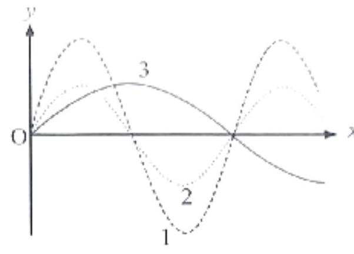

Mỗi câu có 4 phương án, chỉ chọn một đáp án đúng (0,25 điểm).
1
Thông hiểu
(SBT - KNTT) Thời gian kể từ khi ngọn sóng thứ nhất đến ngọn sóng thứ sáu đi qua trước mặt một người quan sát là $12\,s$. Tốc độ truyền sóng là $2\,m/s$. Bước sóng có giá trị là
2
Thông hiểu
(SBT - CTST) Hình 6.1 biểu diễn đồ thị li độ - khoảng cách của ba sóng 1, 2 và 3 truyền dọc theo trục $\text{Ox}$ tại cùng một thời điểm xác định. Biết ba sóng này truyền đi với tốc độ bằng nhau. Nhận xét nào sau đây không đúng?

Hình 6.1
3
Thông hiểu
(SBT - CTST) Xét một sóng truyền dọc theo trục Ox với phương trình $u=6\cos\left(100\pi t-4\pi x\right)\left(\text{cm}\right)$ ($x$ được tính bằng $\text{cm}$, $t$ được tính bằng $s$). Tại một thời điểm, hai điểm gần nhất dao động cùng pha và hai điểm gần nhất dao động ngược pha cách nhau các khoảng lần lượt bằng
4
Thông hiểu
(SBT - CTST) Khi ánh sáng truyền từ không khí vào nước thì
5
Thông hiểu
(SBT - CTST) Khi một sóng biển truyền đi, người ta quan sát thấy khoảng cách giữa 2 đỉnh sóng liên tiếp bằng $8,5\,m$. Biết một điểm trên mặt sóng thực hiện một dao động toàn phần sau thời gian bằng $3,0\,s$. Tốc độ truyền của sóng biển có giá trị bằng
6
Thông hiểu
(SBT - CTST) Xét một sóng truyền dọc theo trục $\text{Ox}$ với phương trình $u=4\cos\left(240t-80x\right)\left(\text{cm}\right)$ ($x$ được tính bằng $\text{m}$, $t$ được tính bằng $s$). Tốc độ truyền của sóng này bằng
7
Thông hiểu
Một người quan sát thấy một cánh hoa trên hồ nước nhô lên 5 lần trong khoảng thời gian $20\,s$. Khoảng cách giữa hai đỉnh sóng kế tiếp là $8\,m$. Tính tốc độ truyền sóng trên mặt hồ.
8
Thông hiểu
Một sóng cơ truyền theo trục $Ox$ với phương trình $u=a\cos\left(4\pi t-0,02\pi x\right)$ ($u$ và $x$ tính bằng $\text{cm}$, $t$ tính bằng giây). Tốc độ truyền của sóng là:
9
Thông hiểu
Một người quan sát một chiếc phao trên mặt biển thì thấy nó nhô lên cao 10 lần trong $18\,s$. Khoảng cách giữa hai ngọn sóng liền kề là $2\,m$. Tốc độ truyền sóng trên mặt nước biển là
10
Thông hiểu
Một người quan sát mặt biển thấy có 5 ngọn sóng đi qua trước mặt mình trong khoảng thời gian $10\,s$ và đo được khoảng cách giữa 2 ngọn sóng liên tiếp bằng $5\,m$. Tốc độ của sóng biển là
11
Thông hiểu
Một người quan sát sóng trên mặt hồ thấy khoảng cách giữa hai ngọn sóng liên tiếp bằng $2\,m$ và có 6 ngọn sóng truyền qua trước mặt trong $8\,s$. Tốc độ truyền sóng nước là
12
Thông hiểu
Một điểm $A$ trên mặt nước dao động với tần số $100\text{ Hz}$. Trên mặt nước người ta đo được khoảng cách giữa 7 gợn lồi liên tiếp là $3\text{ cm}$. Khi đó tốc độ truyền sóng trên mặt nước là
13
Thông hiểu
Một người quan sát thấy một cánh hoa trên hồ nước nhô lên 10 lần trong khoảng thời gian $36\,s$. Khoảng cách giữa hai đỉnh sóng kế tiếp là $12\,m$. Tính tốc độ truyền sóng trên mặt hồ.
14
Thông hiểu
Nguồn phát sóng $S$ trên mặt nước tạo dao động với tần số $f=100\text{ Hz}$ gây ra các sóng tròn lan rộng trên mặt nước. Biết khoảng cách giữa 7 gợn lồi liên tiếp là $3\text{ cm}$. Vận tốc truyền sóng trên mặt nước bằng bao nhiêu?
15
Thông hiểu
Một sóng truyền trên một sợi dây rất dài có li độ $u=6\cos\left(\pi t+\frac{\pi d}{2}\right)\text{cm}$, $d$ đo bằng $\text{cm}$. Li độ của sóng tại $d=1\text{ cm}$ và $t=1\,s$ là
16
Thông hiểu
Người ta gây một dao động ở đầu $O$ một dây cao su căng thẳng làm tạo nên một dao động theo phương vuông góc với vị trí bình thường của dây, với biên độ $a=3\text{ cm}$ và chu kì $T=1,8\,s$. Sau 3 giây chuyển động truyền được $15\,m$ dọc theo dây. Tìm bước sóng của sóng tạo thành truyền trên dây.
17
Thông hiểu
Một sóng cơ lan truyền với tốc độ v = 2 m/s có bước sóng λ = 40 cm. Chu kỳ dao động của sóng là
18
Thông hiểu
Một sóng âm có tần số xác định truyền trong không khí và trong nước với tốc độ lần lượt là 330 m/s và 1452 m/s. Khi sóng âm đó truyền từ nước ra không khí thì bước sóng của nó sẽ
19
Thông hiểu
Tìm phát biểu sai:
20
Thông hiểu
Sóng cơ học lan truyền trong không khí với cường độ đủ lớn, tai ta có thể cảm thụ được sóng cơ học nào sau đây?